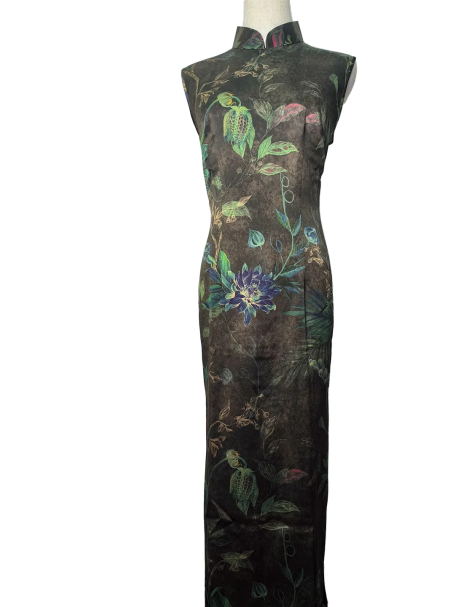
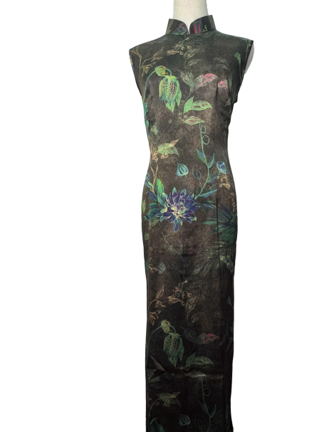
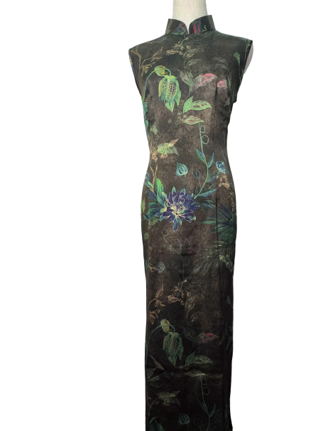

香云纱旗袍
面料
香云纱是经薯莨汁液浸染、河泥涂层等传统工艺制成的丝绸面料，表面乌黑油亮、纹理独特，质地挺括爽滑、透气耐穿，兼具古朴韵味与凉爽特性，是岭南特色高端面料
面料特点
香云纱质地挺括透气，穿着凉爽舒适且越穿越柔软，经传统工艺赋予独特乌亮纹理，耐穿不易褪色，兼具古朴韵味与地域特色，适配典雅复古风格。
注意事项
手洗 / 轻柔机洗，中性洗涤剂冷水短浸、忌搓揉漂白；阴干 / 低温烘干、避暴晒，宽衣架防变形；中温垫布熨烫、顺纹轻压；干燥通风单独存放、防摩擦潮湿；避尖锐物、及时拭污，忌暴晒及剧烈运动。

 
